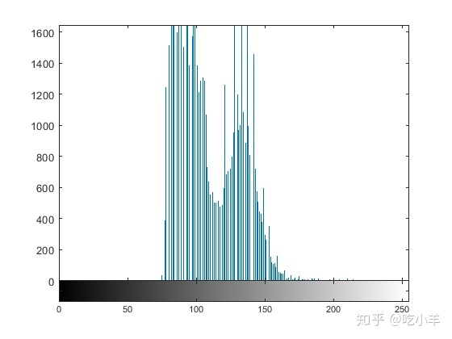
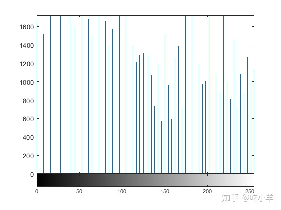

Home
本示例说明如何将图像读取到工作区中，调整图像中的对比度，然后将调整后的图像写入文件。
步骤1：读取并显示图像
使用imread命令将图像读入工作区。该示例读取工具箱附带的示例图像之一，名为pout.tif文件的女孩图像，并将其存储在名为I的数组中。
imread从文件推断出图形文件格式是“标记图像文件格式（TIFF）”。
I = imread('pout.tif');
使用imshow函数显示图像。您也可以在“图像查看器”应用程序中查看图像。 函数imtool将打开图像查看器应用程序，该应用程序提供了一个集成的环境，用于显示图像和执行一些常见的图像处理任务。 “图像查看器”应用程序提供imshow的所有图像显示功能，还提供对其他一些用于导航和浏览图像的工具的访问权， 例如滚动条，“像素区域”工具，“图像信息”工具和“对比度调整”工具。
imshow(I)
步骤2：检查图像在工作区中的显示方式 使用whos命令，查看imread函数如何将图像数据存储在工作空间中。您也可以在工作区浏览器中检查变量。 imread函数返回变量中的图像数据，该变量I是291 x 240元素的uint8数据数组。
whos I Name Size Bytes Class Attributes I 291x240 69840 uint8
步骤3：改善图像对比度
查看图像像素强度值的分布。图像pout.tif是对比度较低的图像。 要查看图像中强度的分布，请调用imhist函数来创建直方图。 （在imhist图形命令之前调用figure，以便直方图不会覆盖I当前图形窗口中图像的显示）。 请注意由直方图可以观察到图像的强度值范围很窄，并未覆盖[0，255]的所有范围，缺少具有良好对比度效果的的高值和低值。
figure imhist(I)

使用histeq函数可以改善图像的对比度。直方图均衡化使得强度值分布在整个图像范围内。 显示图像。（工具箱包括执行对比度调整的其他几个函数，包括imadjust和adapthisteq， 以及图像查看器中提供的交互式工具，例如Adjust Contrast工具。）
I2 = histeq(I); figure imshow(I2)
再次调用imhist函数，创建直方图均衡的图像I2。如果比较两个直方图，可以看到I2的直方图比I的直方图覆盖更大的分布范围。
figure imhist(I2)

步骤4：将调整后的图像写入文件
I2使用imwrite函数将新调整的图像写入磁盘文件。 示例中，文件名中包含文件扩展名'.png'，因此该imwrite函数将图像以可移植网络图形（PNG）格式写入文件，当然我们可以指定其他格式。
imwrite (I2, 'pout2.png');
步骤5：检查新写入文件的内容
使用imfinfo函数查看imwrite写入磁盘文件的内容。imfinfo函数返回图像文件中的信息，例如其格式，大小，宽度和高度。
imfinfo('pout2.png')
ans = struct with fields:
Filename: '/tmp/Bdoc20b_1465442_262082/tp89909334/images-ex89505080/pout2.png'
FileModDate: '24-Aug-2020 19:43:31'
FileSize: 36938
Format: 'png'
FormatVersion: []
Width: 240
Height: 291
BitDepth: 8
ColorType: 'grayscale'
FormatSignature: [137 80 78 71 13 10 26 10]
Colormap: []
Histogram: []
InterlaceType: 'none'
Transparency: 'none'
SimpleTransparencyData: []
BackgroundColor: []
RenderingIntent: []
Chromaticities: []
Gamma: []
XResolution: []
YResolution: []
ResolutionUnit: []
XOffset: []
YOffset: []
OffsetUnit: []
SignificantBits: []
ImageModTime: '24 Aug 2020 23:43:31 +0000'
Title: []
Author: []
Description: []
Copyright: []
CreationTime: []
Software: []
Disclaimer: []
Warning: []
Source: []
Comment: []
OtherText: []
注：本文根据MATLAB官网内容修改而成。